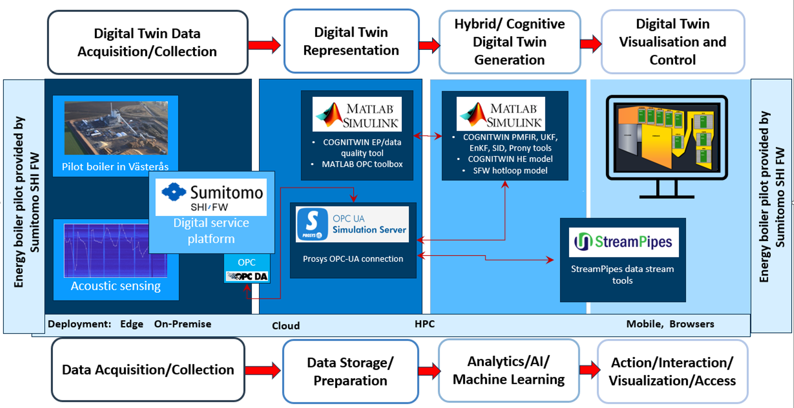

Pipeline name
Boiler fouling management
Pipeline overview

Pipeline components
The following components are used in the pipeline:
Digital Twin Data Acquisition/Collection:
- Sensors: Acoustic Sensing
- SFW Digital Service Platform
- OPC DA
Digital Twin Representation:
- Prosys OPC UA Simulation Server
Hybrid/Cognitive Digital Twin:
- MATLAB-Simulink, incl. MATLAB OPC Toolbox
- COGNITWIN MATLAB tools: Physical model tuning (PMFIR), Unscented Kalman filtering (UKF), Ensemble Kalman filtering (EnKF), subspace identification (SID), dynamic modelling (Prony)
- COGNITWIN physical model for a heat exchanger (HE model, for MATLAB)
- SFW model for CFB furnace (hotloop, for MATLAB)
- COGNITWIN MIP tool for sootblowing optimization
Digital Twin Visualisation and Control:
- Apache StreamPipes
- Sumitomo plant UI/UX
The tools are packaged into five components following the WP3 pilot-driven approach:
- FUSE, aiming at solving the fuel characterization problem, including application independent PMFIR and UKF tools.
- The FUSE OPC-UA component supports the FUSE by demonstrating WP3 data communication.
- The SubFUSE component provides an alternative application independent data-driven identification tool, applied in solving the fuel characterization problem.
- FouMon collects tools for solving the fouling monitoring problem, including the HE-model, EnKF and ODtool application independent tools.
- FouCon provides the optimization tool for solving the WP3 sootblowing problem: MIP/sb. The application independent Prony-tool is provided for data-driven modelling.
Pipeline example description
Data sources
- Process data is collected on-line from plant
- Acousting sensor is operating on-line
Data processing
- Data is transferred from plant to SFW services and to analytics, on-line or in off-line batches
- Analytics for interpretation of acoustic sensoring data.
- Analytics contains Matlab-tools for data quality improvement, physical models, model tuning, process identification (data-driven modelling) and optimization/predictive maintenance.
- OPC-UA can communicate data and computation results between SFW services, Matlab and StreamPipes
Data sinks
- Sumitomo plant UI/UX is used for on-line plant operation and guidance
Defined in COGNITWIN WPs
- WP3 SFW pilot problem and solution
- WP5 hybrid and cognitive digital twin analytics & optimization
- WP4 OPC and data quality